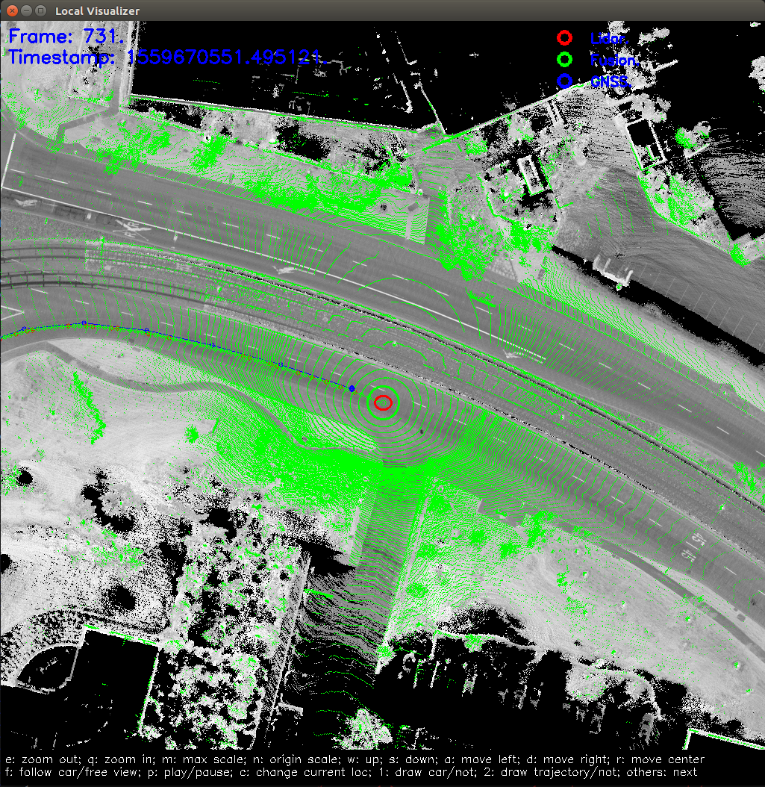

How to Run MSF Localization Module On Your Local Computer
1. Preparation
- Download source code of Apollo from GitHub
- Follow the tutorial to set up docker environment.
- Download localization data from Apollo Data Open Platform（US only).
the localization data is a experimental dataset to verify the availability of localization. It contains localization map(local_map/), vehicle params(params/), sensor recording data(records/). The specific attributes are as follows:
duration: 5 mins
mileage: 3km
areas: city roads in Sunnyvale
weather: sunny day
2. Build Apollo
First check and make sure you are in development docker container before you proceed. Now you will need to build from the source.
# To make sure you start clean
bash apollo.sh clean
# Build the full system
bash apollo.sh build_opt
note: If the computer is very slow, you can enter the following command to limit the CPU.
bash apollo.sh build_opt --local_resources 2048,1.0,1.0
3. Configuring Parameters
In the downloaded data, you can find a folder named apollo3.5. Let's assume the path of this folder as DATA_PATH.
3.1 Configure Sensor Extrinsics
cp -r DATA_PATH/params/* /apollo/modules/localization/msf/params/
The meaning of each file in the folder - ant_imu_leverarm.yaml: Lever arm value - velodyne128_novatel_extrinsics.yaml: Transform from IMU coord to LiDAR coord - velodyne128_height.yaml: Height of the LiDAR relative to the ground
3.2 Configure Map Path
Add config of map path in /apollo/modules/localization/conf/localization.conf
# Redefine the map_dir in global_flagfile.txt
--map_dir=DATA_PATH
This will overwrite the default config defined in global_flagfile.txt
4. Run the multi-sensor fusion localization module
run the script in apollo directory
cyber_launch start /apollo/modules/localization/launch/msf_localization.launch
In /apollo/data/log directory, you can see the localization log files.
- localization.INFO : INFO log
- localization.WARNING : WARNING log
- localization.ERROR : ERROR log
- localization.out : Redirect standard output
- localizaiton.flags : A backup of configuration file
5. Play cyber records
cd DATA_PATH/records
cyber_recorder play -f record.*
The localization module will finish initialization and start publishing localization results after around 50 seconds.
6. Record and Visualize localization result (optional)
Record localization result
python /apollo/scripts/record_bag.py --start
Visualize Localization result
cyber_launch start /apollo/modules/localization/launch/msf_visualizer.launch
First, the visualization tool will generate a series of cache files from the localization map, which will be stored in the /apollo/cyber/data/map_visual directory.
Then it will receive the topics blew and draw them on screen. - /apollo/sensor/lidar128/compensator/PointCloud2 - /apollo/localization/msf_lidar - /apollo/localization/msf_gnss - /apollo/localization/pose
If everything is fine, you should see this on screen.

Note: The visualization tool will show up the windows after the localization module started to published localization msgs to topic /apollo/localization/pose. You can use command cyber_monitor to monitor the status of topics.
7. Stop localization module
If you record localization result in step 6, you will also need to end the recording process:
python /apollo/scripts/record_bag.py --stop
8. Verify the localization result (optional)
./scripts/msf_local_evaluation.sh OUTPUT_PATH
OUTPUT_PATH is the folder stored recording bag in step 6.
This script compares the localization results of MSF mode to RTK mode.
Note: Aware that this comparison makes sense only when the RTK mode runs well.
And we can get the statistical results like this

The first table is the statistical data of Fusion localization. The second table is the statistical result of Lidar localization.
The meaning of each row in the table - error： the plane error, unit is meter - error lon： the error in the car's heading direction, unit is meter - error lat： the error in the car's lateral direction, unit is meter - error roll： the roll angle error, unit is degree - error pit： the pitch angle error, unit is degree - error yaw： the yaw angle error, unit is degree
The meaning of each col in the table - mean： evaluation value of the error - std： the standard deviation of the error - max： the maximum value of the error - < xx： percentage of frames whose error is smaller than the indicated range - con_frame()： the maximum number of consecutive frames that satisfy the conditions in parentheses